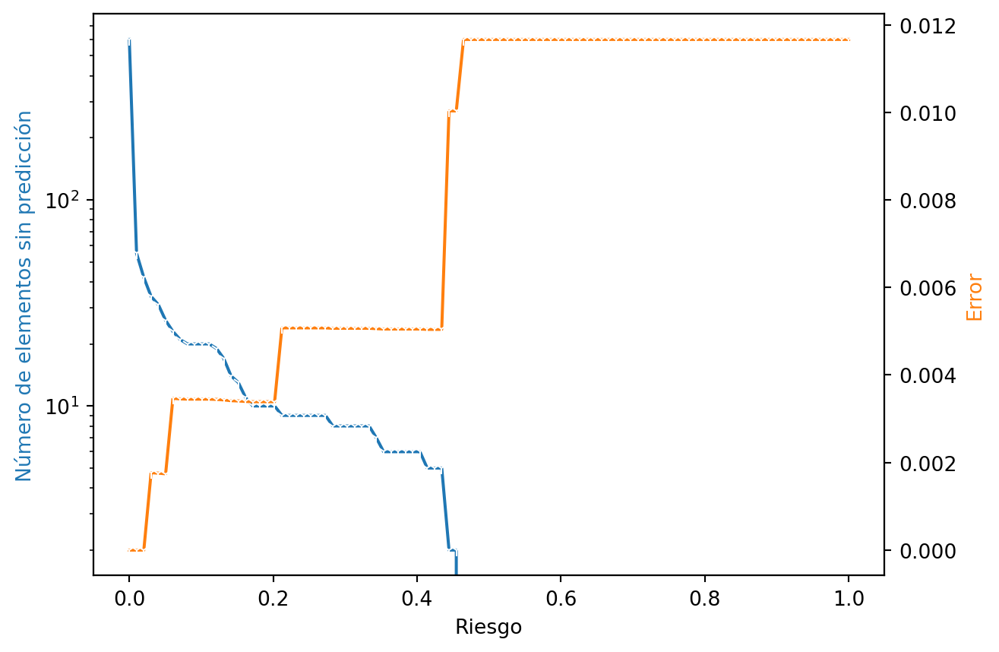
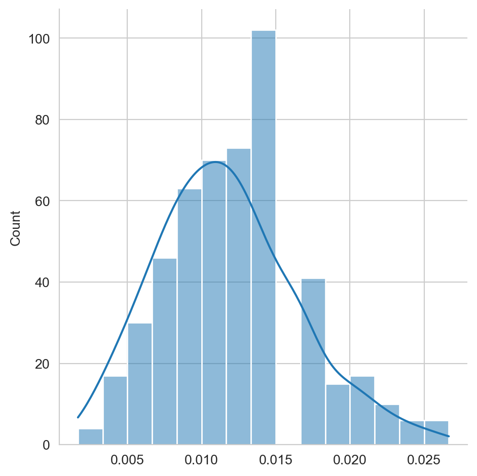
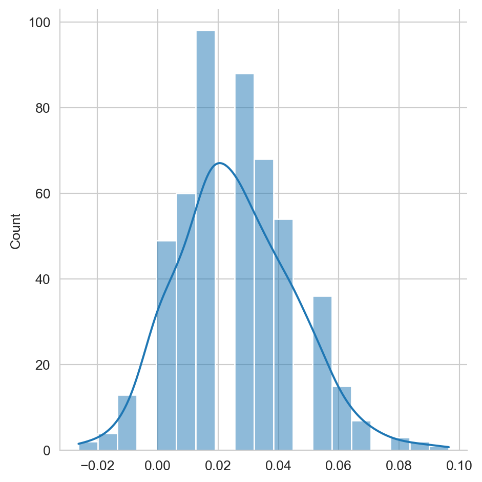
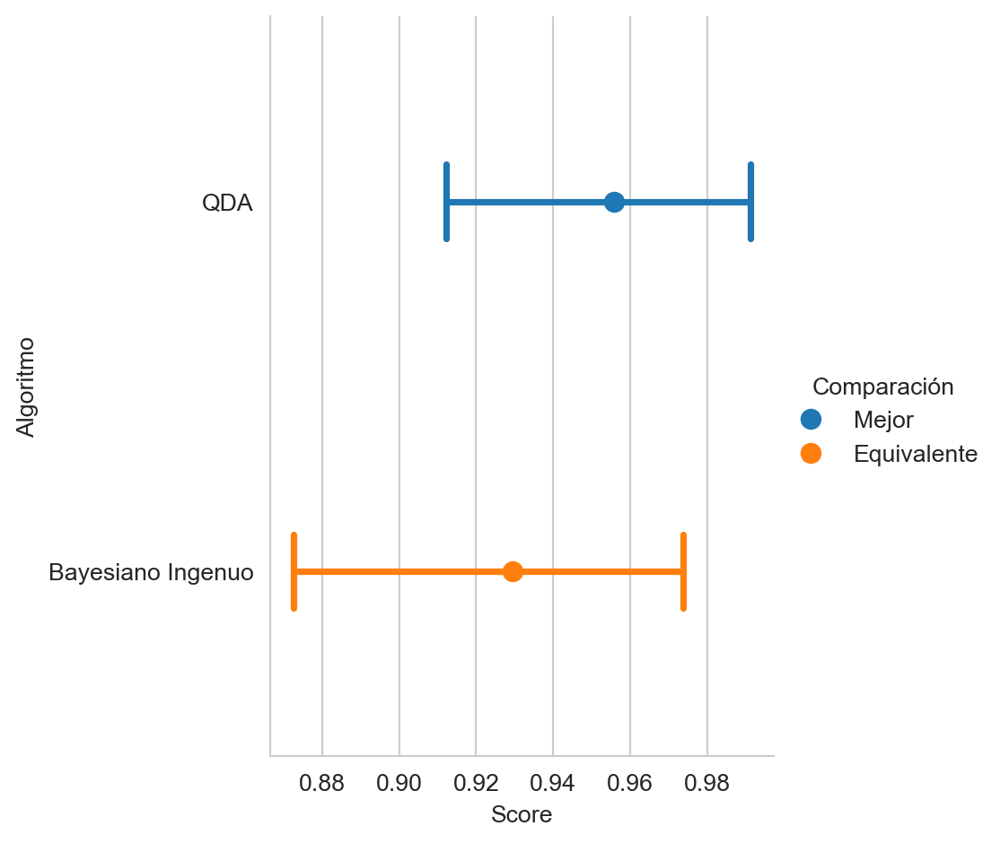
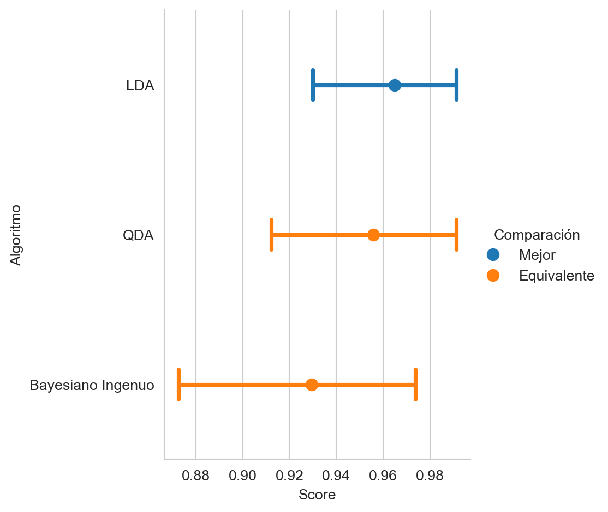
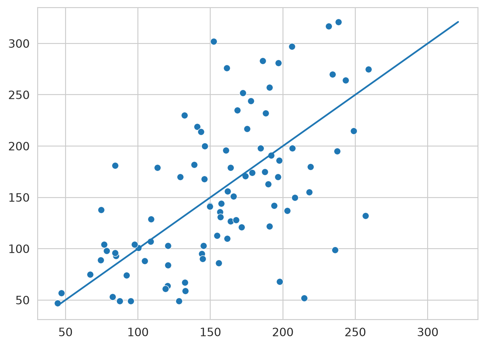
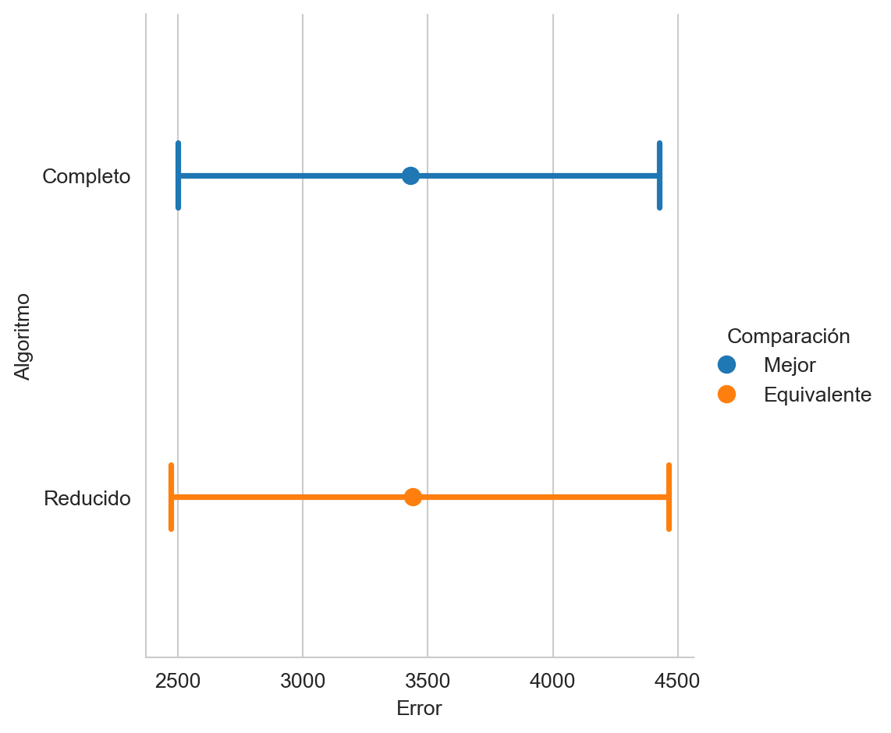
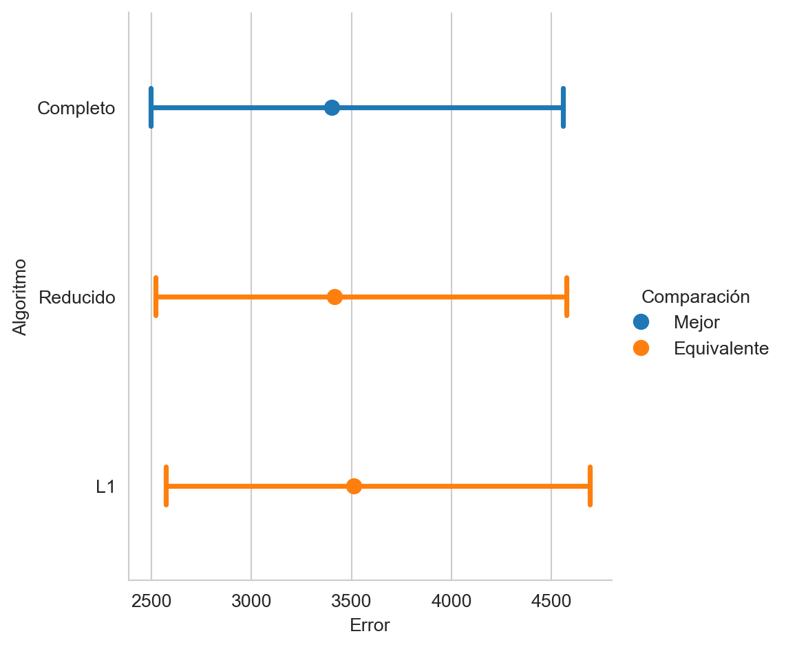
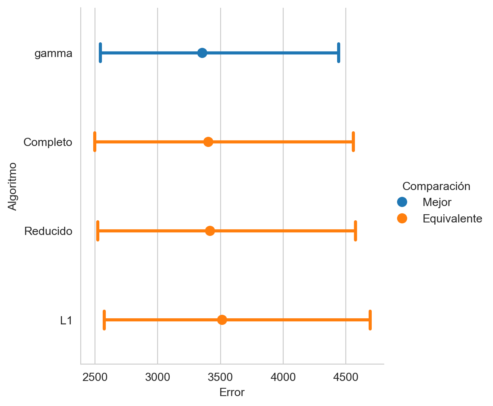

from sklearn.discriminant_analysis import QuadraticDiscriminantAnalysis
from sklearn.discriminant_analysis import LinearDiscriminantAnalysis
from sklearn.naive_bayes import GaussianNB
from sklearn.linear_model import LinearRegression
from sklearn.model_selection import train_test_split
from sklearn.datasets import load_breast_cancer,\
load_diabetes
from scipy.stats import norm, multivariate_normal
from scipy.special import logsumexp
from matplotlib import pylab as plt
import numpy as np
import cvxpy as cp
import pandas as pd
import seaborn as sns
from CompStats.metrics import accuracy_score, mean_squared_error3 Métodos Paramétricos
El objetivo de la unidad es conocer las características de los modelos paramétricos y aplicar máxima verosimilitud para estimar los parámetros del modelo paramétrico en problemas de regresión y clasificación.
Paquetes usados
3.1 Introducción
Existen diferentes tipos de algoritmos que se puede utilizar para resolver problemas de aprendizaje supervisado y no supervisado. En particular, esta unidad se enfoca en presentar las técnicas que se pueden caracterizar como métodos paramétricos.
Los métodos paramétricos se identifican por asumir que los datos provienen de una distribución de la cual se desconocen los parámetros y el procedimiento es encontrar los parámetros de la distribución que mejor modelen los datos. Una vez obtenidos los parámetros se cuenta con todos los elementos para utilizar el modelo y predecir la característica para la cual fue entrenada.
3.2 Metodología
Hasta el momento se han presentado ejemplos de los pasos 4 y 5 de la metodología general (ver Sección 1.2); esto fue en la Sección 2.3.2 y en la Sección 2.4. Esta sección complementa los ejemplos anteriores al utilizar todos pasos de la metodología general de aprendizaje supervisado (ver Sección 1.2). En particular se enfoca al paso 3 que corresponde al diseño del algoritmo \(f\) que modela el fenómeno de interés utilizando los datos \(\mathcal T \subset \mathcal D.\)
El algoritmo \(f\) corresponde a asumir que los datos \(\mathcal D\) provienen de una distribución \(F\) la cual tiene una serie de parámetros \(\theta\) que son identificados con \(\mathcal T.\)
3.3 Estimación de Parámetros
Se inicia la descripción de métodos paramétricos presentando el procedimiento general para estimar los parámetros de una distribución. Se cuenta con un conjunto \(\mathcal D\) donde los elementos \(x \in \mathcal D\) son \(x \in \mathbb R^d\). Los elementos \(x \in \mathcal D\) tienen un distribución \(F\), i.e., \(x \sim F\), son independientes y \(F\) está definida por la función de densidad de probabilidad \(f_{\theta}\), que a su vez está definida por \(\theta\) parámetros. Utilizando \(\mathcal D\) el objetivo es identificar los parámetros \(\theta\) que hacen observar a \(\mathcal D\) lo más probable.
3.3.1 Verosimilitud
Una solución para maximizar el observar \(\mathcal D\) es maximizando la verosimilitud. La verosimilitud es la función distribución conjunta de los elementos en \(\mathcal D\), i.e., \(f_\theta(x_1, x_2, \ldots, x_N).\) Considerando que la muestras son independientes entonces \(f_\theta(x_1, x_2, \ldots, x_N) = \prod_{x \in \mathcal D} f_\theta (x).\) La función de verosimilitud considera la ecuación anterior como una función de los parámetros \(\theta,\) es decir,
\[ \mathcal L(\theta) = \prod_{x \in \mathcal D} f_\theta (x), \]
siendo el logaritmo de la verosimilitud
\[ \ell(\theta) = \log \mathcal L(\theta) = \sum_{x \in \mathcal D} \log f_\theta (x). \]
3.3.2 Distribución de Bernoulli
La verosimilitud se ejemplifica con la identificación del parámetro \(p\) de una distribución Bernoulli. Una distribución Bernoulli modela dos estados, por un lado se tiene la clase negativa identificada por \(0\); identificando la clase positiva como \(1\). Entonces, la probabilidad de observar \(1\) es \(\mathbb P(X=1) = p\) y \(\mathbb P(X=0) = 1 - p\). Estas ecuaciones se pueden combinar para definir \(f_\theta(x) = p^x (1 - p)^{1-x}.\)
Utilizando el logaritmo de la verosimilitud se tiene:
\[ \ell(p) = \sum_{i=1}^N \log p^{x_i} (1 - p)^{1-x_i} = \sum_{i=1}^N x_i \log p + (1-x_i) \log (1 - p). \]
Recordando que el máximo de \(\ell(\mathcal p)\) se obtiene cuando \(\frac{d}{dp} \ell(\mathcal p) = 0\), entonces estimar \(p\) corresponde a resolver lo siguiente:
\[ \begin{split} \frac{d}{dp} \ell(\mathcal p) &= 0 \\ \frac{d}{dp} [ \sum_{i=1}^N x_i \log p + (1-x_i) \log (1 - p)] &= 0 \\ \frac{d}{d p} [ \sum_{i=1}^N x_i \log p + \log (1 - p) (N - \sum_{i=1}^N x_i) ] &= 0\\ \sum_{i=1}^N x_i \frac{d}{d p} \log \mathcal p + (N - \sum_{i=1}^N x_i) \frac{d}{d p} \log (1 - \mathcal p) &= 0\\ \sum_{i=1}^N x_i \frac{1}{p} + (N - \sum_{i=1}^N x_i) \frac{-1}{(1 - p)} &= 0\\ \end{split} \]
Realizando algunas operaciones algebraicas se obtiene:
\[ \hat p = \frac{1}{N}\sum_{i=1}^N x_i. \]
3.3.3 Ejemplo: Distribución Gaussiana
Esta sección sigue un camino práctico, presentando el código para estimar los parámetros de una distribución Gaussiana donde se conocen todos los parámetros. La distribución se usa para generar 1000 muestras y después de esta población se estiman los parámetros; de estas manera se tienen todos los elementos para comparar los parámetros reales \(\theta\) de los parámetros estimados \(\hat \theta.\)
La distribución que se usará se utilizó para generar un problema sintético (ver Sección 2.3.1) de tres clases. Los parámetros de la distribución son: \(\mathbf \mu = [5, 5]^\intercal\) y \(\Sigma = \begin{pmatrix} 4 & 0 \\ 0 & 2 \\ \end{pmatrix}.\) La siguiente instrucción se puede utilizar para generar 1000 muestras de esa distribución.
D = multivariate_normal(mean=[5, 5],
cov=[[4, 0],
[0, 2]]).rvs(size=1000)La media estimada de los datos en D se calcula usando la función np.mean de la siguiente manera
mu = np.mean(D, axis=0)donde el eje de operación es el primero que corresponde al índice \(0.\) La media estimada es: \(\hat \mu = [4.9541, 4.9637]^\intercal\) con un error estándar (se) de \([0.0662, 0.0433]^\intercal\) que se calcula con el siguiente código.
se = np.std(D, axis=0) / np.sqrt(1000)Hasta el momento se ha estimado \(\mu\), falta por estimar \(\Sigma\), que se puede realizar con la siguiente instrucción
cov = np.cov(D, rowvar=False)donde el parámetro rowvar indica la forma en que están proporcionados los datos. La estimación da los siguientes valores \(\hat \Sigma = \begin{pmatrix} 4.3901&-0.0905 \\ -0.0905&1.8759 \\ \end{pmatrix};\) se puede observar que son similares al parámetro con que se simularon los datos.
Siguiendo con la inercia de presentar el error estándar de cada estimación, en las siguientes instrucciones se presenta el error estándar de \(\hat \Sigma\), el cual se calcula utilizando la técnica de bootstrap (ver Sección A.2) implementada en el siguiente código.
S = np.random.randint(D.shape[0],
size=(500, D.shape[0]))
B = [np.cov(D[s], rowvar=False) for s in S]
se = np.std(B, axis=0)Se puede observar que la función np.cov se ejecuta utilizando la muestra indicada en la variable s. El error estándar (se) de \(\hat \Sigma\) corresponde a \(\begin{pmatrix} 0.1844&0.0834 \\ 0.0834&0.0847 \\ \end{pmatrix}.\) Se observa que los elementos fuera de la diagonal tienen un error estándar tal que el cero se encuentra en el intervalo \(\hat \Sigma \pm se;\) lo cual indica que el cero es un valor factible. Lo anterior se puede verificar tomando en cuenta que se conoce \(\Sigma\) y que el parámetro real es \(0\) para aquellos elementos fuera de la diagonal.
3.4 Metodología de Clasificación
Habiendo descrito el proceso para estimar los parámetros de una distribución, por un lado se presentó de manera teórica con la distribución Bernoulli (ver Sección 3.3.2) y de manera práctica con una distribución Gaussiana (ver Sección 3.3.3), se está en la posición de usar todos estos elementos para presentar el proceso completo de clasificación. La metodología general de aprendizaje supervisado (ver Sección 1.2) está definida por cinco pasos, estos pasos se especializan para el problema de clasificación y regresión, utilizando modelos paramétricos, de la siguiente manera.
- Todo empieza con un conjunto de datos \(\mathcal D\) que tiene la información del fenómeno de interés.
- Se selecciona el conjunto \(\mathcal T \subset \mathcal D,\) el procedimiento se describe en la Sección 3.5.
- Se diseña un algoritmo, \(f\), el cual se basa en un modelo (ver Sección 3.6) y la estimación de sus parámetros (ver Sección 3.6.1) utilizando \(\mathcal T.\)
- En la Sección 3.6.2 se describe el uso de \(f\) para predecir.
- La Sección 3.6.3 muestra el procedimiento para medir el rendimiento utilizando un conjunto de prueba (ver Sección 3.5).
La metodología de clasificación se ilustra utilizando el problema sintético (ver Sección 2.3.1) de tres clases que se presentó en el Capítulo 2.
NotaProblema sintético
Código
seed = 0
p1 = multivariate_normal(mean=[5, 5],
cov=[[4, 0], [0, 2]],
seed=seed)
p2 = multivariate_normal(mean=[1.5, -1.5],
cov=[[2, 1], [1, 3]],
seed=seed)
p3 = multivariate_normal(mean=[12.5, -3.5],
cov=[[2, 3], [3, 7]],
seed=seed)
X_1 = p1.rvs(size=1000)
X_2 = p2.rvs(size=1000)
X_3 = p3.rvs(size=1000) Específicamente, las entradas que definían a cada clase están en la variables X_1, X_2 y X_3. Entonces las clases se pueden colocar en la variable y tal como se indica a continuación.
X = np.concatenate((X_1, X_2, X_3))
y = np.array([1] * 1000 + [2] * 1000 + [3] * 1000)Las variables X y y contiene la información del conjunto \(\mathcal D = (\mathcal X, \mathcal Y)\) donde cada renglón de X es una realización de la variable aleatoria \(\mathcal X\) y equivalentemente cada elemento en y es una realización de \(\mathcal Y.\)
3.5 Conjunto de Entrenamiento y Prueba
En la Sección 3.3.3 se había utilizado a \(\mathcal D\) en el procedimiento de maximizar la verosimilitud, esto porque el objetivo en ese procedimiento era estimar los parámetros de la distribución. Pero el objetivo en aprendizaje supervisado es diseñar un algoritmo (función en este caso) que modele la relación entre \(\mathcal X\) y \(\mathcal Y\). Para conocer esto es necesario medir el rendimiento del algoritmo en instancias que no han sido vistas en el entrenamiento.
En consecuencia, se requieren contar con datos para medir el rendimiento, a este conjunto de datos se le conoce como el conjunto de prueba, \(\mathcal G\). \(\mathcal G\) se crea a partir de \(\mathcal D\) de tal manera que \(\mathcal G \cap \mathcal T = \emptyset\) y \(\mathcal D = \mathcal G \cup \mathcal T.\) La siguiente instrucción se puede utilizar para dividir la generación de estos conjuntos a partir de \(\mathcal D.\)
T, G, y_t, y_g = train_test_split(X, y,
test_size=0.2,
random_state=seed)El parámetro test_size indica la proporción del tamaño de conjunto \(\mathcal G\) en relación con el conjunto \(\mathcal D.\)
3.6 Clasificador
El inicio de métodos paramétricos es el Teorema de Bayes (Ecuación 2.1) \(\mathbb P(\mathcal Y \mid \mathcal X) = \frac{ \mathbb P(\mathcal X \mid \mathcal Y) \mathbb P(\mathcal Y)}{\mathbb P(\mathcal X)}\) donde se usa la verosimilitud \(\mathbb P(\mathcal X \mid \mathcal Y)\) y el prior \(\mathbb P(\mathcal Y)\) para definir la probabilidad a posteriori \(\mathbb P(\mathcal Y \mid \mathcal X)\). En métodos paramétricos se asume que se puede modelar la verosimilitud con una distribución particular, que por lo generar es una distribución Gaussiana multivariada. Es decir, la variable aleatoria \(\mathcal X\) dado \(\mathcal Y\) (i.e., \(\mathcal X_{\mid \mathcal Y}\)) es \(\mathcal X_{\mid \mathcal Y} \sim \mathcal N(\mu_{\mathcal Y}, \Sigma_{\mathcal Y}),\) donde se observa que los parámetros de la distribución Gaussiana dependen de la variable aleatoria \(\mathcal Y\) y estos pueden ser identificados cuando \(\mathcal Y\) tiene un valor específico.
3.6.1 Estimación de Parámetros
Dado que por definición del problema (ver Sección 2.3.1) se conoce que la verosimilitud para cada clase proviene de una Gaussiana, i.e., \(\mathcal X_{\mid \mathcal Y} \sim \mathcal N(\mu_{\mathcal Y}, \Sigma_{\mathcal Y}),\) en esta sección se estimarán los parámetros utilizando este conocimiento.
El primer paso en la estimación de parámetros es calcular el prior \(\mathbb P(\mathcal Y)\), el cual corresponde a clasificar el evento sin observar el valor de \(\mathcal X.\) Esto se puede modelar mediante una distribución Categórica con parámetros \(p_i\) donde \(\sum_i^K p_i = 1\). Estos parámetros se pueden estimar utilizando la función np.unique de la siguiente manera
labels, counts = np.unique(y_t, return_counts=True)
prior = counts / counts.sum()La variable prior contiene en el primer elemento \(\mathbb P(\mathcal Y=1) = 0.3179,\) en el segundo \(\mathbb P(\mathcal Y=2) = 0.3387\) y en el tercero \(\mathbb P(\mathcal Y=3) = 0.3433\) que es aproximadamente \(\frac{1}{3}\) el cual es el valor real del prior.
Siguiendo los pasos en estimación de parámetros de una Gaussiana (Sección 3.3.3) se pueden estimar los parámetros para cada Gaussiana dada la clase. Es decir, se tiene que estimar los parámetros \(\mu\) y \(\Sigma\) para la clase \(1\), \(2\) y \(3.\) El algoritmo de clasificación que estima \(\mu\) y \(\Sigma\) para cada clase se le conoce como Analizador Discriminante Cuadrático implementando en la clase QuadraticDiscriminantAnalysis.
Una implementación directa para la estimación de los parámetros se puede realizar iterando por las etiquetas contenidas en la variable labels y seleccionando los datos en T que corresponden a la clase analizada, ver el uso de la variable mask en el slice de la línea 4 y 5. Después se inicializa una instancia de la clase multivariate_normal para ser utilizada en el cómputo de la función de densidad de probabilidad. El paso final es guardar las instancias de las distribuciones en la lista likelihood.
likelihood = []
for k in labels:
mask = y_t == k
mu = np.mean(T[mask], axis=0)
cov = np.cov(T[mask], rowvar=False)
likelihood_k = multivariate_normal(mean=mu, cov=cov)
likelihood.append(likelihood_k)Los valores estimados para la media, en cada clase son: \(\hat \mu_1 = [5.0267, 4.9626]^\intercal,\) \(\hat \mu_2 = [1.5687, -1.4642]^\intercal\) y \(\hat \mu_3 = [12.5188, -3.4715]^\intercal\). Para las matrices de covarianza, los valores estimados corresponden a \(\hat \Sigma_1 = \begin{pmatrix} 3.8108 & -0.0363\\-0.0363 & 1.9319 \\ \end{pmatrix},\) \(\hat \Sigma_2 = \begin{pmatrix} 1.8221 & 0.8862\\0.8862 & 2.8153 \\ \end{pmatrix}\) y \(\hat \Sigma_3 = \begin{pmatrix} 1.9043 & 2.8677\\2.8677 & 6.7392 \\ \end{pmatrix}.\)
Estas estimaciones se pueden comparar con los parámetros reales (Sección 2.3.1). También se puede calcular su error estándar para identificar si el parámetro real, \(\theta\), se encuentra en el intervalo definido por \(\hat \theta - 2\hat{se} \leq \hat \theta \leq \hat \theta + 2 \hat{se}\) que corresponde aproximadamente al 95% de confianza asumiendo que la distribución de la estimación del parámetro es Gaussiana.
Nota
El código anterior tiene el fin de explicar el procedimiento para estimar los parámetros, la clase QuadraticDiscriminantAnalysis implementa diferentes métodos de estimación y se puede utilizar con el siguiente código.
qda = QuadraticDiscriminantAnalysis(store_covariance=True).fit(T, y_t)Los parámetros \(\mu\) se encuentran en el siguiente atributo. Se puede observar que los valores estimados por el método explicado y el implementado en QDA es el mismo.
qda.means_array([[ 5.0267, 4.9626],
[ 1.5687, -1.4642],
[12.5188, -3.4715]])Los parámetros estimados para \(\Sigma_1\) se pueden obtener en el siguiente atributo
qda.covariance_[0]array([[ 3.8108, -0.0363],
[-0.0363, 1.9319]])Se observa que los valores son equivalentes entre los dos procedimientos, es importante mencionar que estos parámetros solamente están disponibles si la clase se inicializa con el parámetro store_covariance en verdadero.
Cuando se asume que las matrices de covarianza son iguales para todas las clases, se está en la presencia del algoritmo Analizador Discriminante Lineal. Este algoritmo está implementado en la clase LinearDiscriminantAnalysis.
Nota
La clase LinearDiscriminantAnalysis se utiliza con la siguiente instrucción, el parámetro store_covariance se asigna para poder mostrar la matriz de covarianza.
lda = LinearDiscriminantAnalysis(store_covariance=True).fit(T, y_t)Los parámetros \(\mu\) se encuentran en el siguiente atributo. Se puede observar que los valores estimados por el método explicado son los encontrados anteriormente.
lda.means_array([[ 5.0267, 4.9626],
[ 1.5687, -1.4642],
[12.5188, -3.4715]])Los parámetros estimados para la matriz de covarianza, \(\Sigma\), se pueden obtener en el siguiente atributo
lda.covariance_array([[2.4794, 1.2717],
[1.2717, 3.8769]])3.6.2 Predicción
Una vez que se tiene la función que modela los datos, se está en condiciones de utilizarla para predecir (ver Sección 2.3.2) nuevos datos.
En esta ocasión se organiza el procedimiento de predicción en diferentes funciones, la primera función recibe los datos a predecir X y los componentes del modelo, que son la verosimilitud (likelihood) y el prior. La función calcula \(\mathbb P(\mathcal Y=y \mid \mathcal X=x)\) que es la probabilidad de cada clase dada la entrada \(x\). Se puede observar en la primera línea que se usa la función de densidad de probabilidad (pdf) para cada clase y esta se multiplica por el prior y en la tercera línea se calcula la evidencia. Finalmente, se regresa el a posteriori.
def predict_prob(X, likelihood, prior):
likelihood = [m.pdf(X) for m in likelihood]
posterior = np.vstack(likelihood).T * prior
evidence = posterior.sum(axis=1)
return posterior / np.atleast_2d(evidence).TLa función predict_proba se utiliza como base para predecir la clase, para la cual se requiere el mapa entre índices y clases que se encuentra en la variable labels. Se observa que se llama a la función predict_proba y después se calcula el argumento que tiene la máxima probabilidad regresando la etiqueta asociada.
def predict(X, likelihood, prior, labels):
_ = predict_prob(X, likelihood, prior)
return labels[np.argmax(_, axis=1)]
Nota
La predicción en la clase QuadraticDiscriminantAnalysis se puede realizar invocando al siguiente método tal y como se muestra en la siguiente linea.
qda_hy = qda.predict(G)La probabilidad se puede obtener utilizando el método predict_proba.
qda_prob = qda.predict_proba(G)De manera similar la predicción del algoritmo LinearDiscriminantAnalysis se realiza con la siguiente instrucción.
lda_hy = lda.predict(G)3.6.3 Rendimiento
El rendimiento del algoritmo se mide en el conjunto de prueba G, utilizando como medida el error de clasificación (Sección 2.4). El primer paso es predecir las clases de los elementos en G, utilizando la función predict que fue diseñada anteriormente. Después se mide el error, con la instrucción de la segunda línea.
hy = predict(G, likelihood, prior, labels)
error = (y_g != hy).mean()El error que tiene el algoritmo en el conjunto de prueba es \(0.0117\).
Nota
El error utilizado qda_hy corresponde a \(0.0117.\)
TipActividad
Utilizando la probabilidad en el conjunto de prueba, que se tiene en la variable qda_prob, calcular la variación del número de elementos que son asociados a la acción nula cuando se varía el nivel de riesgo (ver Sección 2.7), incluir en la figura o en una figura adicional, la dinámica del error en el conjunto de prueba para los elementos válidos. La Figura 3.1 muestra el resultado de este proceso. Se observa como van disminuyendo el número de elementos asociados a la acción nula cuando el riesgo se incrementa y al mismo tiempo como el error aumenta.

Para calcular el error estándar se utiliza el siguiente código
se_formula = np.sqrt(error * (1 - error) / y_g.shape[0])dando un valor de \(0.0044.\)
TipActividad
Generar la distribución del error utilizando el método de Bootstrap (ver Sección A.2), tal y como se muestra en la Figura 3.2.

El error estándar calculado con los datos mostrados en la figura anterior es \(0.0042\)
3.7 Clasificador Bayesiano Ingenuo
Uno de los clasificadores mas utilizados, sencillo de implementar y competitivo, es el clasificador Bayesiano Ingenuo. En la Sección 3.6 se asumió que la variable aleatoria \(\mathcal X = (\mathcal X_1, \mathcal X_2, \ldots, \mathcal X_d)\) dado \(\mathcal Y\) (\(\mathcal X_{\mid \mathcal Y}\)) es \(\mathcal X_{\mid \mathcal Y} \sim \mathcal N(\mu_{\mathcal Y}, \Sigma_{\mathcal Y}),\) donde \(\mu_{\mathcal Y} \in \mathbb R^d\), \(\Sigma_{\mathcal Y} \in \mathbb R^{d \times d}\) y \(f(\mathcal X_1, \mathcal X_2, \ldots, \mathcal X_d)\) es la función de densidad de probabilidad conjunta.
En el clasificador Bayesiano Ingenuo se asume que las variables \(\mathcal X_i\) y \(\mathcal X_j\) para \(i \neq j\) son independientes, esto trae como consecuencia que \(f(\mathcal X_1, \mathcal X_2, \ldots, \mathcal X_d) = \prod_i^d f(\mathcal X_i).\) Esto quiere decir que cada variable está definida como una Gaussiana donde se tiene que identificar \(\mu\) y \(\sigma^2.\)
La estimación de los parámetros de estas distribuciones se puede realizar utilizando un código similar siendo la única diferencia que en se calcula \(\sigma^2\) de cada variable en lugar de la covarianza \(\Sigma\), esto se puede observar en la quinta línea donde se usa la función np.var en el primer eje. El resto del código es equivalente al usado en la Sección 3.6.1.
likelihood = []
for k in labels:
mask = y_t == k
mu = np.mean(T[mask], axis=0)
var = np.var(T[mask], axis=0, ddof=1)
likelihood_k = multivariate_normal(mean=mu, cov=var)
likelihood.append(likelihood_k)Los parámetros estimados en la versión ingenua son equivalentes con respecto a las medias, i.e., \(\hat \mu_1 = [5.0267, 4.9626]^\intercal\), \(\hat \mu_2 = [1.5687, -1.4642] ^\intercal\) y \(\hat \mu_3 = [12.5188, -3.4715]^\intercal\). La diferencia se puede observar en las varianzas, que a continuación se muestran como matrices de covarianza para resaltar la diferencia, i.e., \(\hat \Sigma_1 = \begin{pmatrix} 3.8108 & 0.0000\\0.0000 & 1.9319 \\ \end{pmatrix}\), \(\hat \Sigma_2 = \begin{pmatrix} 1.8221 & 0.0000\\0.0000 & 2.8153 \\ \end{pmatrix}\) y \(\hat \Sigma_3 = \begin{pmatrix} 1.9043 & 0.0000\\0.0000 & 6.7392 \\ \end{pmatrix}\) se observa como los elementos fuera de la diagonal son ceros, lo cual indica la independencia entra las variables de entrada.
Finalmente, el código para predecir se utiliza el código descrito en la Sección 3.6.2 dado que el modelo está dado en las variables likelihood y prior.
El error del clasificador Bayesiano Ingenuo, en el conjunto de prueba, es de \(0.01\) y su error estándar (se_formula) es \(0.0041.\)
Nota
El código anterior tiene la finalidad de explicar la estimación de parámetros del Clasificador Bayesiano Ingenuo. Este procedimiento se encuentra en la clase GaussianNB, en ese paquete se pueden encontrar implementaciones con otras distribuciones.
El siguiente código muestra su uso.
naive = GaussianNB().fit(T, y_t)Los parámetros \(\mu\) se encuentran se pueden consultar con la siguiente instrucción
naive.theta_array([[ 5.0267, 4.9626],
[ 1.5687, -1.4642],
[12.5188, -3.4715]])y \(\sigma^2\) en
naive.var_array([[3.8058, 1.9293],
[1.8199, 2.8119],
[1.902 , 6.731 ]])3.8 Ejemplo: Breast Cancer Wisconsin
Esta sección ilustra el uso del clasificador Bayesiano al generar dos modelos; Clasificador Bayesiano (mejor conocido como el algoritmo de Análisis Discriminante Cuadrático) y Bayesiano Ingenuo en el conjunto de datos de Breast Cancer Wisconsin. Estos datos se pueden obtener utilizando la función load_breast_cancer tal y como se muestra a continuación.
X, y = load_breast_cancer(return_X_y=True)El primer paso es contar con los conjuntos de entrenamiento y prueba para poder realizar de manera completa la evaluación del proceso de clasificación. Esto se realiza ejecutando la siguiente instrucción.
T, G, y_t, y_g = train_test_split(X, y, test_size=0.2,
random_state=seed)3.8.1 Entrenamiento
Los dos modelos que se utilizarán será el clasificador de Análisis Discriminante Cuadrático y Bayesiano Ingenuo, utilizando las clases QuadraticDiscriminantAnalysis y GaussianNB. Las siguientes dos instrucciones inicializan estos dos clasificadores.
qda = QuadraticDiscriminantAnalysis(reg_param=1e-3).fit(T, y_t)
naive = GaussianNB().fit(T, y_t)3.8.2 Predicción
Habiendo definido los dos clasificadores, las predicciones del conjunto de prueba se realiza de la siguiente manera.
hy_qda = qda.predict(G)
hy_naive = naive.predict(G)3.8.3 Rendimiento
El rendimiento de ambos clasificadores se calcula de la siguiente manera
error_qda = (y_g != hy_qda).mean()
error_naive = (y_g != hy_naive).mean()El clasificador Bayesiano Gaussiano tiene un error de \(0.0526\) y el error de Bayesiano Ingenuo es \(0.0702.\) Se ha visto que el error es una variable aleatoria, entonces la pregunta es saber si esta diferencia en rendimiento es significativa o es una diferencia que proviene de la aleatoriedad de los datos.
3.9 Diferencias en Rendimiento
Una manera de ver si existe una diferencia en rendimiento es calcular la diferencia entre los dos errores de clasificación, esto es
naive = (y_g != hy_naive).mean()
completo = (y_g != hy_qda).mean()
if naive > completo:
diff = naive - completo
else:
diff = completo - naiveque tiene un valor de \(0.0175\). De la misma manera que se ha utilizado la técnica de bootstrap (Sección A.2) para calcular el error estándar de la media, se puede usar para estimar el error estándar de la diferencia en rendimiento. El siguiente código muestra el procedimiento para estimar este error estándar.
S = np.random.randint(y_g.shape[0],
size=(500, y_g.shape[0]))
if naive > completo:
diff_f = lambda s: (y_g[s] != hy_naive[s]).mean() -\
(y_g[s] != hy_qda[s]).mean()
else:
diff_f = lambda s: (y_g[s] != hy_qda[s]).mean() -\
(y_g[s] != hy_naive[s]).mean()
B = [diff_f(s) for s in S]
se = np.std(B, axis=0)El error estándar de la diferencia de rendimiento es de \(0.0179\), una procedimiento simple para saber si la diferencia observada es significativa, es dividir la diferencia entre su error estándar dando un valor de \(0.9813\). En el caso que el valor absoluto fuera igual o superior a 2 se sabría que la diferencia es significativa con una confianza de al menos 95%, esto asumiendo que la diferencia se comporta como una distribución Gaussiana.
El histograma de los datos que se tienen en la variable B se observa en la Figura 3.3. Se puede ver que la forma del histograma asemeja una distribución Gaussiana y que el cero esta en el cuerpo de la Gaussiana, tal y como lo confirmó el cociente que se calculado.
Código
sns.set_style('whitegrid')
fig = sns.displot(B, kde=True)
Se puede conocer la probabilidad de manera exacta calculando el área bajo la curva a la izquierda del cero, este sería el valor \(p\), si este es menor a 0.05 quiere decir que se tiene una confianza mayor del 95% de que los rendimientos son diferentes. Para este ejemplo, el área se calcula con el siguiente código
dist = norm(loc=diff, scale=se)
p_value = dist.cdf(0)teniendo el valor de \(0.1632\), lo que significa que se tiene una confianza del \(83\)% de que los dos algoritmos son diferentes considerando el error de clasificación como medida de rendimiento.
Nota
El error es el complemento de la exactitud (Sección 4.2.2), utilizando la librería CompStats (Nava-Muñoz et al. (2024)), en particular la función que implementa la exactitud, se puede medir el rendimiento de los dos algoritmos tal y como se muestra en el siguiente código. En la primera linea se mide el rendimiento de QDA y en la segunda el rendimiento que corresponde a Bayesiano Ingenuo. La última linea gráfica el rendimiento.
score = accuracy_score(y_g, hy_qda, name='QDA')
score(hy_naive, name='Bayesiano Ingenuo')
score.plot(comp_legend='Comparación',
winner_legend='Mejor',
tie_legend='Equivalente',
loser_legend='Diferente',
alg_legend='Algoritmo',
var_name='Rendimiento')
En la Figura 3.4 se observa el rendimiento, con su intervalo de confianza al 95%. También se incluye, el resultado de comparar estadísticamente (95%) la diferencia de rendimiento mediante el color.
TipActividad
Incluir en la comparación anterior el algoritmo Analizador Discriminante Lineal, tal y como se muestra en la Figura 3.5.

3.10 Regresión
Hasta este momento se han revisado métodos paramétricos en clasificación, ahora es el turno de abordar el problema de regresión. La diferencia entre clasificación y regresión como se describió en la Sección 1.4 es que en regresión \(\mathcal Y \in \mathbb R.\)
El procedimiento de regresión que se describe en esta sección es regresión de Mínimos Cuadrados Ordinaria (OLS -Ordinary Least Squares-), en el cual se asume que \(\mathcal Y \sim \mathcal N(\mathbf w \cdot \mathbf x + \epsilon, \sigma^2)\), de tal manera que \(y = \mathbb E[\mathcal N(\mathbf w \cdot \mathbf x + \epsilon, \sigma^2)].\)
Trabajando con \(y = \mathbb E[\mathcal N(\mathbf w \cdot \mathbf x + \epsilon, \sigma^2)],\) se considera lo siguiente \(y = \mathbb E[\mathcal N(\mathbf w \cdot \mathbf x, 0) + \mathcal N(0, \sigma^2)]\) que implica que el error \(\epsilon\) es independiente de \(\mathbf x\), lo cual se transforma en \(y = \mathbf w \cdot \mathbf x + \mathbb E[\epsilon],\) donde \(\mathbb E[\epsilon]=0.\) Por lo tanto \(y = \mathbf w \cdot \mathbf x.\)
La función de densidad de probabilidad de una Gaussiana corresponde a
\[ f(\alpha) = \frac{1}{\sigma \sqrt{2 \pi}} \exp{-\frac{1}{2} (\frac{\alpha - \mu}{\sigma})^2}, \]
donde \(\alpha\), en el caso de regresión, corresponde a \(\mathbf w \cdot \mathbf x\) (i.e., \(\alpha = \mathbf w \cdot \mathbf x\)).
Utilizando el método de verosimilitud el cual corresponde a maximizar
\[ \begin{split} \mathcal L(\mathbf w, \sigma) &= \prod_{(\mathbf x, y) \in \mathcal D} f(\mathbf w \cdot \mathbf x) \\ &= \prod_{(\mathbf x, y) \in \mathcal D} \frac{1}{\sigma \sqrt{2\pi}} \exp{(-\frac{1}{2} (\frac{\mathbf w \cdot \mathbf x - y}{\sigma})^2)} \\ \ell(\mathbf w, \sigma) &= \sum_{(\mathbf x, y) \in \mathcal D}\log \frac{1}{\sigma \sqrt{2\pi}} -\frac{1}{2} (\frac{\mathbf w \cdot \mathbf x - y}{\sigma})^2 \\ &= - \frac{1}{2\sigma^2} \sum_{(\mathbf x, y) \in \mathcal D} (\mathbf w \cdot \mathbf x - y)^2 - N \log \frac{1}{\sigma \sqrt{2\pi}}. \end{split} \]
El valor de cada parámetro se obtiene al calcular la derivada parcial con respecto al parámetro de interés, entonces se resuelven \(d\) derivadas parciales para cada uno de los coeficientes \(\mathbf w\). En este proceso se observar que el término \(N \log \frac{1}{\sigma \sqrt{2\pi}}\) no depende de \(\mathbf w\) entonces no afecta el máximo siendo una constante en el proceso de derivación y por lo tanto se desprecia. Lo mismo pasa para la constante \(\frac{1}{2\sigma^2}\). Una vez obtenidos los parámetros \(\mathcal w\) se obtiene el valor \(\sigma.\)
Una manera equivalente de plantear este problema es como un problema de algebra lineal, donde se tiene una matriz de observaciones \(X\) que se construyen con las variables \(\mathbf x\) de \(\mathcal X,\) donde cada renglón de \(X\) es una observación, y el vector dependiente \(\mathbf y\) donde cada elemento es la respuesta correspondiente a la observación.
Viéndolo como un problema de algebra lineal lo que se tiene es
\[ X \mathbf w = \mathbf y, \]
donde para identificar \(\mathbf w\) se pueden realizar lo siguiente
\[ X^\intercal X \mathbf w = X^\intercal \mathbf y. \]
Despejando \(\mathbf w\) se tiene
\[ \mathbf w = (X^\intercal X)^{-1} X^\intercal \mathbf y. \]
Previamente se ha presentado el error estándar de cada parámetro que se ha estimado, en caso de la regresión el error estándar (Sección A.1.3) de \(\mathcal w_j\) es \(\sigma \sqrt{(X^\intercal X)^{-1}_{jj}}.\)
3.10.1 Ejemplo: Diabetes
Esta sección ilustra el proceso de resolver un problema de regresión utilizando OLS. El problema a resolver se obtiene mediante la función load_diabetes de la siguiente manera
X, y = load_diabetes(return_X_y=True)El siguiente paso es generar los conjuntos de entrenamiento y prueba (Sección 3.5)
T, G, y_t, y_g = train_test_split(X, y, test_size=0.2,
random_state=seed)Con el conjunto de entrenamiento T y y_t se estiman los parámetros de la regresión lineal tal y como se muestra a continuación
m = LinearRegression().fit(T, y_t)Los primeros tres coeficientes de la regresión lineal son \(\mathbf w=[-35.55, -243.17, 562.76, \ldots]\) y \(w_0=152.54\) lo cual se encuentran en las siguientes variables
w = m.coef_
w_0 = m.intercept_La pregunta es si estos coeficientes son estadísticamente diferentes de cero, esto se puede conocer calculando el error estándar de cada coeficiente. Para lo cual se requiere estimar \(\sigma\) que corresponde a la desviación estándar del error tal y como se muestra en las siguientes instrucciones.
error = y_t - m.predict(T)
std_error = np.std(error)El error estándar de \(\mathbf w\) es
diag = np.arange(T.shape[1])
_ = np.sqrt((np.dot(T.T, T)**(-1))[diag, diag])
se = std_error * _y para saber si los coeficientes son significativamente diferente de cero se calcula el cociente m.coef_ entre se; teniendo los siguientes valores \([-0.62, -4.17, 9.88, \ldots]\), para las tres primeras componentes. Se observa que hay varios coeficientes con valor absoluto menor que 2, lo cual significa que esas variables tiene un coeficiente que estadísticamente no es diferente de cero.
La predicción del conjunto de prueba se puede realizar con la siguiente instrucción
hy = m.predict(G)Finalmente, la Figura 3.6 muestra las predicciones contra las mediciones reales. También se incluye la línea que ilustra el modelo ideal.
Código
sns.scatterplot(x=hy, y=y_g)
_min = min(y_g.min(), hy.min())
_max = max(y_g.max(), hy.max())
sns.set_style('whitegrid')
fig = sns.lineplot(x=[_min, _max], y=[_min, _max])
Complementando el ejemplo anterior, se realiza un modelo que primero elimina las variables que no son estadísticamente diferentes de cero (primera línea) y después crea nuevas variables al incluir el cuadrado, ver las líneas dos y tres del siguiente código.
mask = np.fabs(m.coef_ / se) >= 2
T2 = np.concatenate((T[:, mask], T[:, mask]**2), axis=1)
G2 = np.concatenate((G[:, mask], G[:, mask]**2), axis=1)Se observa que la identificación de los coeficientes \(\mathbf w\) sigue siendo lineal aun y cuando la representación ya no es lineal por incluir el cuadrado. Siguiendo los pasos descritos previamente, se inicializa el modelo y después se realiza la predicción.
m2 = LinearRegression().fit(T2, y_t)
hy2 = m2.predict(G2)En este momento se compara si la diferencia entre el error cuadrático medio, del primer y segundo modelo, la diferencia es \(8.9400\) indicando que el primer modelo es mejor.
diff = ((y_g - hy2)**2).mean() - ((y_g - hy)**2).mean()Para comprobar si esta diferencia es significativa se calcula el error estándar, utilizando bootstrap (Sección A.2) tal y como se muestra a continuación.
S = np.random.randint(y_g.shape[0],
size=(500, y_g.shape[0]))
B = [((y_g[s] - hy2[s])**2).mean() -
((y_g[s] - hy[s])**2).mean()
for s in S]
se = np.std(B, axis=0)Finalmente, se calcula el área bajo la curva a la izquierda del cero, teniendo un valor de \(0.4999\) lo cual indica que los dos modelos son similares. En este caso se prefiere el modelo más simple porque se observar que incluir el cuadrado de las variables no contribuye a generar un mejor model. El área bajo la curva se calcula con el siguiente código.
dist = norm(loc=diff, scale=se)
p_value = dist.cdf(0)
Nota
Utilizando la librería CompStats se puede hacer una comparación del rendimiento de la regresión logística utilizando todas las variables y solo aquellas que son estadísticamente significantes, tal y como se muestra en la Figura 3.7
mse = mean_squared_error(y_g, hy, name='Completo')
mse(hy2, name='Reducido')
mse.plot(comp_legend='Comparación',
winner_legend='Mejor',
tie_legend='Equivalente',
loser_legend='Diferente',
alg_legend='Algoritmo',
var_name='Rendimiento')
3.10.2 Optimización
Otra manera de ver el problema de regresión es como un problema de optimización, tal y como se muestra en Ecuación 3.1; cabe resaltar que el problema mostrado en Ecuación 3.1 tiene una solución analítica y no es necesario utilizar un sistema de optimización.
\[ \min \mid\mid \mathbf y - (X \mathbf w + w_0) \mid\mid_2 \tag{3.1}\]
donde \(X\) corresponde a las observaciones en el conjunto de entrenamiento y \(\mathbf y\) es el valor medido; con esta información y la librería CVXPY (Diamond y Boyd (2016)), el problema de la Ecuación 3.1 se puede codificar con los siguientes pasos. En primer lugar se crean las variables del problema de optimización, i.e., \(\mathbf w\) y \(w_0\).
w = cp.Variable(T.shape[1])
w0 = cp.Variable(1)La función objetivo se genera, con la función cp.norm como se muestra a continuación
norm = cp.norm(y_t - (T@w + w0), 2)Las últimas instrucciones corresponden a indicar que se está desea minimizar la función objetivo, construir el problema de optimización e introducir el problema al optimizador tal y como se observa en el siguiente código.
obj = cp.Minimize(norm)
prob = cp.Problem(obj)
valor = prob.solve()Habiendo descrito el uso de la norma \(L_2\) la cual tiene una solución analítica es cuestión de cambiar el parámetro en la función cp.norm para estimar los coeficientes \(\mathbf w\) y \(w_0\) usando la norma \(L_1\), como se muestra en la siguientes instrucciones.
norm = cp.norm(y_t - (T@w + w0), 1)
obj = cp.Minimize(norm)
prob = cp.Problem(obj)
valor = prob.solve()La Figura 3.8 muestra el rendimiento del uso de la norma \(L_2\) (Completo), la norma \(L_1\) y el modelo que se obtiene quitando aquellos elementos que son estadísticamente equivalentes a cero.
mse(G @ w.value + w0.value, name='L1')
mse.plot(comp_legend='Comparación',
winner_legend='Mejor',
tie_legend='Equivalente',
loser_legend='Diferente',
alg_legend='Algoritmo',
var_name='Rendimiento')
Tener el problema de regresión como un problema de optimización, permite incluir de manera eficiente restricciones que pueden mejorar el rendimiento del regresor. Por ejemplo se podría restringir la norma de los coeficientes i.e., \(\mathbf w\) para que sea menor que un parámetros, tal y como se muestra en la Ecuación 3.2 donde la norma \(L_1\) de los coeficientes debe de ser menor al parámetro \(\gamma\).
\[ \begin{split} \min & \mid\mid \mathbf y - (X \mathbf w + w_0) \mid\mid_2 \\ \text{sujeto a} & \\ & \mid \mid \mathbf w \mid \mid_1 \leq \gamma \\ \end{split} \tag{3.2}\]
El siguiente código muestra las instrucciones para codificar y resolver el problema descrito en la Ecuación 3.2 utilizando CVXPY (Diamond y Boyd (2016)). La primera instrucción genera el parámetro \(\gamma\) con el valor \(1500\) (segunda linea), el resto de las lineas se han visto previamente, la única diferencia es la restricción \(\mid\mid \mathbf w \mid\mid_1 \leq \gamma\) que se observa en la penúltima linea.
gamma = cp.Parameter()
gamma.value = 1500
norm = cp.norm(y_t - (T@w + w0), 2)
obj = cp.Minimize(norm)
prob = cp.Problem(obj, [cp.norm(w, 1) <= gamma])
value = prob.solve()Se decidió utilizar la norma \(L_1\) en la restricción porque esa norma hace que algunos de los coeficientes estimados sean cero o muy cercanos a cero, por ejemplo con el valor de \(\gamma\) seleccionado se tienen np.int64(3) coeficientes menores que \(10^{-5}\). En el siguiente código, la primera linea reemplaza los coeficientes cercanos a cero por ese valor y se genera la figura que presenta el rendimiento de los sistemas evaluados.
w.value[np.fabs(w.value)<1e-5] = 0
mse(G @ w.value + w0.value, name=f'gamma').plot(
comp_legend='Comparación',
winner_legend='Mejor',
tie_legend='Equivalente',
loser_legend='Diferente',
alg_legend='Algoritmo',
var_name='Rendimiento')
En la Figura 3.9 se observa que el mejor rendimiento se obtiene con el sistema donde los coeficientes son seleccionados con la restricción de la norma \(L_1\), aunque cabe mencionar que todos los sistemas son estadísticamente equivalentes entre si.